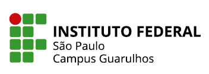
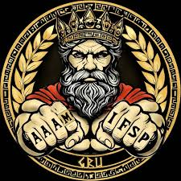

IFSP ConnectAluno: Emily Oliveira Araujo
Curso: ECO
Objetivo do sistema: Criar um portal acadêmico para reunir informações importantes para estudantes, professores e visitantes.
Apresentação institucional do IFSP campus guarulhos gravado pelos estudantes.
O IFSP Connect é um projeto desenvolvido ao longo da disciplina de Desenvolvimento Front-End.
Durante as próximas missões, novos conteúdos e recursos serão adicionados ao projeto.
Ao final da jornada, o IFSP Connect será uma aplicação web completa, organizada e interativa.
O IFSP Connect é um projeto desenvolvido para acompanhar a evolução dos conhecimentos adquiridos no curso de Desenvolvimento Front-End. Ao longo das missões, novas funcionalidades serão adicionadas ao site, permitindo aplicar na prática os conceitos estudados.
O principal objetivo do projeto IFSP Connect é proporcionar uma experiência prática de aprendizagem em Desenvolvimento Front-End, permitindo que os conhecimentos adquiridos ao longo do curso sejam aplicados na criação de um website. Por meio do desenvolvimento gradual do projeto, os estudantes poderão compreender como estruturar páginas, organizar conteúdos e construir uma interface funcional utilizando diferentes tecnologias.
Durante sua evolução, o IFSP Connect terá a implementação de diversas funcionalidades, como página inicial, informações sobre a instituição, catálogo de cursos, agenda de eventos, galeria de imagens, formulário de contato e área de notícias. Além disso, o projeto permitirá trabalhar conceitos importantes de desenvolvimento web, como responsividade, componentes interativos e validação de formulários, utilizando HTML, CSS e JavaScript.
Ao final do projeto, espera-se que o estudante tenha desenvolvido uma aplicação web completa e tenha consolidado seus conhecimentos em Desenvolvimento Front-End. Dessa forma, o IFSP Connect também servirá como um portfólio, demonstrando a evolução das habilidades adquiridas durante a disciplina e possibilitando apresentar, de maneira prática, os resultados do aprendizado.
O Audio abaixo é do podcast criado por alunos do ifsp campus guarulhos IFSPCast comemorando um ano do canal no youtube, uma iniciativa para promover o conhecimento adquirido.
| Técnico | |||
|---|---|---|---|
| Cursos | Duração | Turno | modalidade |
| Automação Industrial | 3 Semestres | Noturno | Presencial |
| Desenvolvimento de Sistemas | 2 Semestres | Vespertino | Semi presencial |
| Sistemas de Energia Renovável | 3 Semestres | Vespertino | Presencial |
| Técnico Integrado ao Ensino médio | |||
|---|---|---|---|
| Cursos | Duração | Turno | modalidade |
| Mecatrônica | 4 Anos | Integral | Presencial |
| Informática | 4 anos | Vespertino | Presencial |
| Superiores | |||
|---|---|---|---|
| Cursos | Duração | Turno | modalidade |
| Licenciatura em Matemática | 8 semestres | Matutino/Noturno | Presencial |
| Tecnologia em Análise e Desenvolvimento de Sistemas | 5 semestre | Noturno | Semi presencial |
| Tecnologia em Automação Industrial | 7 Semestres | Noturno | Presencial |
| Bacharelado em Engenharia de Computação | 10 Semestres | Integral | Presencial |
| Bacharelado em Engenharia de Controle e Automação | 10 Semestres | Integral | Presencial |
| Pós-Graduação | |||
|---|---|---|---|
| Cursos | Duração | Turno | modalidade |
| Computação Aplicada | 3 semestres | EAD | EAD |
| Tecnologias Aplicadas à Educação | 3 semestres | EAD | EAD |
